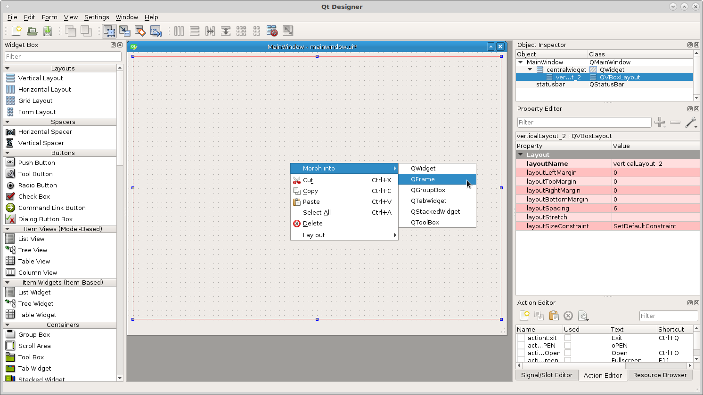
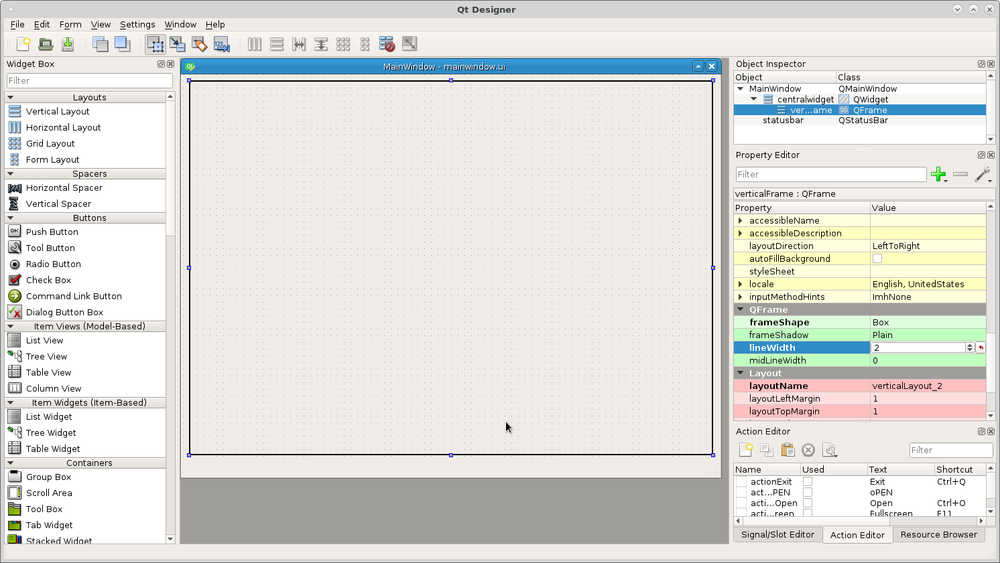
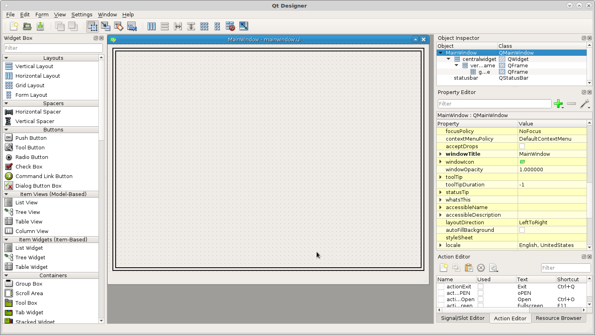
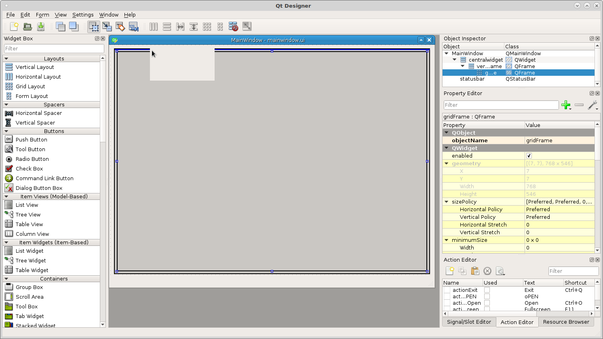
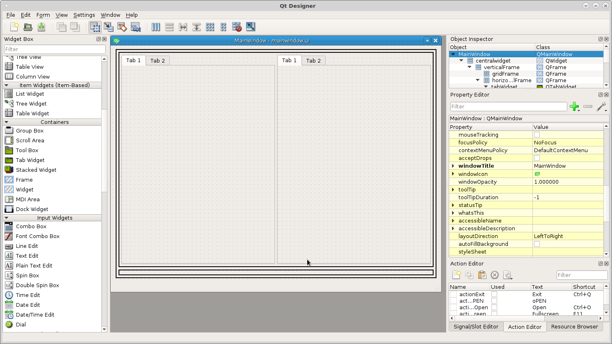
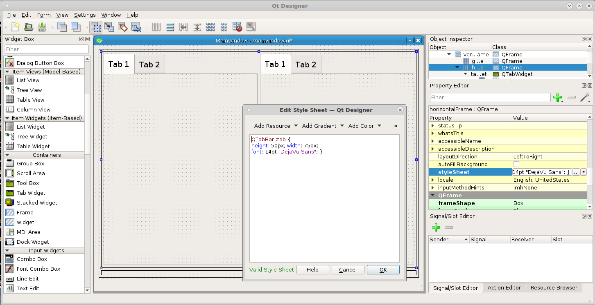
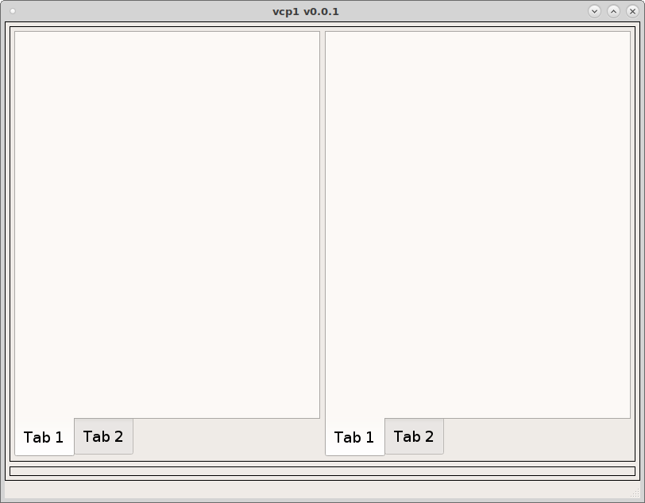

Setup the Layout¶
The first thing to do is figure out the general layout of the screen and put some layouts in and morph them into frames. I’m going to start with a Vertical Layout because I want the bottom row of control buttons to be visible at all times. Drag a Vertical Layout into the main window and right click on it and morph into a QFrame.
{kind=link}
In the Property Editor on the right side change the Frame Shape from No Frame to a Box and change the margins (left, right, top and bottom) to 5, this makes it easier to see the blue line when dragging other layouts into the frame.
{kind=link}
Now drag a grid layout into the vertical frame and change it as above. Now you can see the space between the inner and outer frames very well.
{kind=link}
Now drag a horizontal layout above the grid and inside the vertical layout and change as above.
{kind=link}
Now drag two Tab Widgets into the top horizontal layout and notice the bottom frame is now much smaller but you can still see it well enough to drag items into it.
{kind=link}
Now we want to change the tab widgets to be more touch screen friendly. To set the size of tabs in a Tab Widget add the following into the QFrame styleSheet that has the Tab Widgets in it. This is how you change the style of everything in a container in one place.
QTabBar::tab {
height: 50px; width: 90px;
font: 14pt "DejaVu Sans"; }
This will set the size of the tabs larger and easier to press with your finger. Also change the location of the tabs to the South position so you can see the tab as you change from tab to tab.
{kind=link}
Here is our completed layout running.
{kind=link}